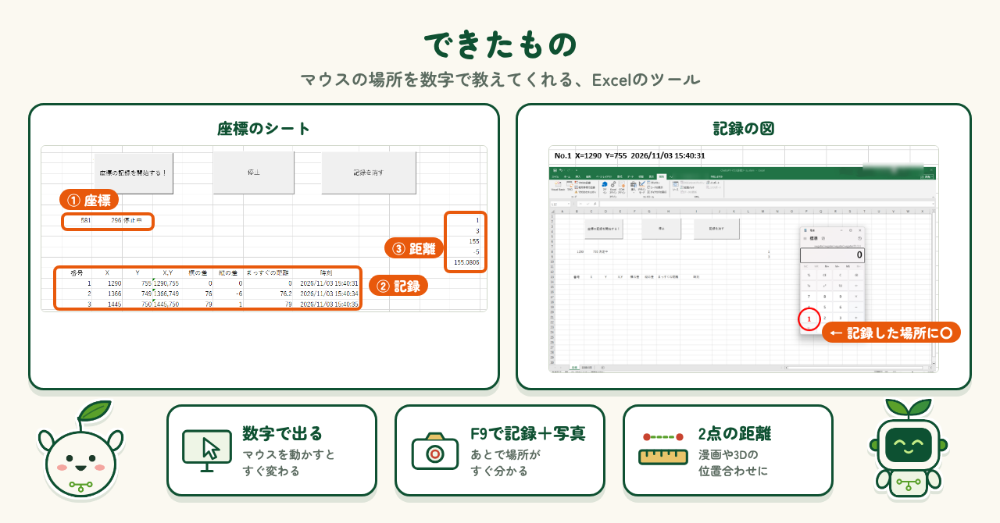
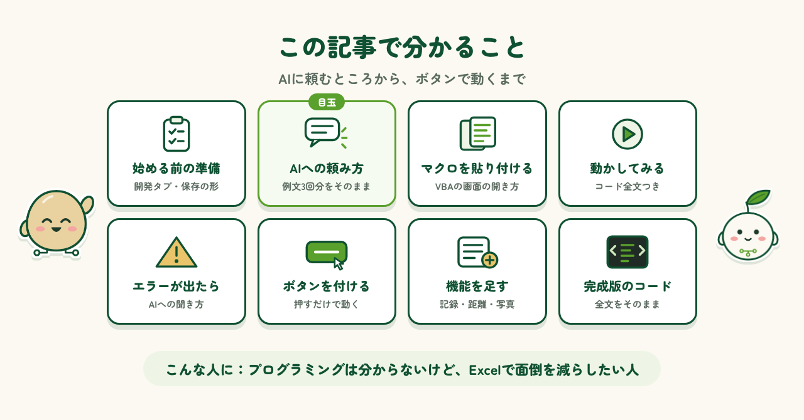

2026.11.15 公開
【コピペで動く】プログラミング未経験でも、AIにExcelマクロを作ってもらう手順
ChatGPT無料版とExcelだけで、マウスの座標を測るツールを作った手順の記録です。
はじめに
YouTubeで動画を見ていると、途中で広告が流れてきますよね。正直、ちょっとうざいと思いませんか？
「スキップ」のボタンって、だいたい同じ場所に出るんです。だったら自動でポチッと押してくれる仕組みがあれば最高なのに……。そんな、ちょっとズルい妄想から調べ始めたら、まず画面の「座標」を知る必要があると分かりました。座標とは、画面の中の場所を「横に何ピクセル、縦に何ピクセル」という数字で表したものです。
結局、広告スキップの仕組みは作っていません（※）。でも「座標を簡単に調べたい」という気持ちだけは残りました。どうせならAIの力を借りて、座標を調べるツールを自分で作ってしまおう。これがこの記事のきっかけです。
プログラミングは分からなくても、ExcelとChatGPT無料版だけで作れました。この記事では、その手順をすべてまとめます。
※ 広告を自動でスキップする仕組みは、YouTubeの利用規約にふれるおそれがあります。この記事では作らず、座標を調べるツールまでを扱います。
できたもの
できたのは、マウスの場所を数字で教えてくれるExcelのツールです。ボタンを押すと、今マウスがある場所の座標が出続けます。調べたい場所でF9キーを押すと、その座標を一覧に記録します。
ただ、数字だけだと、あとで「これ、どこだっけ？」となりそうです。そこで、記録するたびに画面の写真も残し、記録した場所に赤い〇を付けるようにしました。
さらに、最近は4コマ漫画やBlenderでの3Dモデルづくりもしているので、2つの点の間の距離も分かるようにしました。絵や模型の位置合わせに使えそうだと思ったからです。

この記事で分かること
この記事で分かることは、次のとおりです。
- 始める前の準備（「開発」タブ、保存のしかた）
- ChatGPTへの頼み方（実際に使った頼む文を3回分そのまま）
- マクロの貼り付け方と動かし方（コード全文つき）
- エラーが出たときのAIへの聞き方
- ボタンの付け方
- 記録・距離・画面の写真など、機能の足し方
- 完成版のコード全文（そのまま貼って使えます）
プログラミングは分からないけど、Excelで面倒な作業を減らしたい方に向いています。反対に、Macをお使いの方には向いていません（Windows版のExcelでしか動かない作り方です）。

制作メモ
段落の構成と文章の下書きはAI（Claude）と作り、各段落に自分の感想を入れて、1段落ずつ確認・修正しました。図もAIと一緒に作っています。